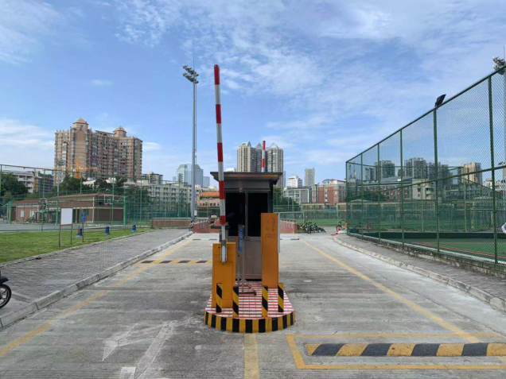

学院通知 · 校园活动
望江校区地下停车场正式启用
发布时间：2019-09-30
望江校区地下停车场自试运行以来，效果良好，将定于2019年10月8日正式启用，现将相关事项通知如下： 1、适用对象：四川大学公车（A2证）、教工车辆（A1证）、川大附小教师车辆（D证）。 2、收费规则：（1）学校公车全时段免费停放；（2）教工和川大附小教师车辆在每日07:00-23:00可免费停放；23:00-次日07:00，按政府指导价计费：起价4元/4小时，4小时后1元/2小时，不足2小时按2小时计。 3、望江校区地下停车场现有车位1533个，进出口2个（西区游泳池出入口、文华活动中心出入口）。学校将根据地下停车场运行后的车位情况决定是否办理月卡，是否对家属、公务预约等其他类型车辆开放。 4、望江校区地下停车场正式启用后，学校保卫处将加大对校园违停的整治力度，严格执行“二主三横三纵”限停规定，为师生员工营造良好的校园交通环境。 “二主三横三纵”限停区域： “二主”：文华大道全线、体育馆广场 “三横”：体育馆草坪至东一食堂前道路、学子路、建德北路 “三纵”：体育馆和东九学生宿舍中间路段、学府东路、张澜路 感谢广大教职员工对校园交通管理工作的理解与支持，愿我们的校园更加美丽！ 西区游泳池出入口 文华活动中心出入口
